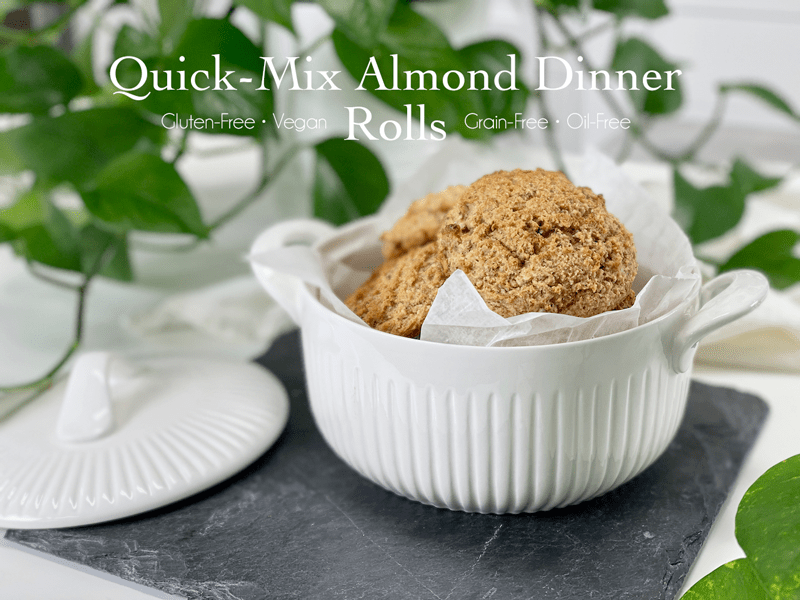
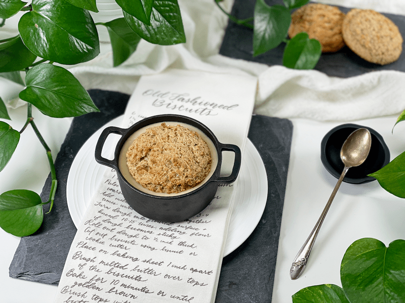

Quick-Mix Almond Dinner Rolls | Cooked | Gluten-Free | Oil-Free | Grain-Free
These dinner rolls have a light crust, soft and chewy inside, slice well, and don’t crumble under pressure. Hearty yet pillowy (in between a down and memory foam pillow, that is), they’re constructed with almond flour, whole almonds, psyllium husks, and a few other supporting ingredients… making them hard to resist and sure to complement any meal. If you’ve ever been intimidated by the idea of making rolls from scratch, don’t be! It’s a really simple process, especially this recipe. With a grand total of 8 ingredients, I assure you that there is nothing complicated or exhausting here.

They’re fantastic on their own, slathered with a bit of vegan butter, or dunked big time into a bowl of piping hot soup. In fact, for lunch, I served us up a bowl of creamed potato and cauliflower soup, nesting a dinner roll right in the center. I then drove my spoon through the edge of the roll, down into the soup, lifting out a perfect bite. Quite Amazing. Simply Amazing. Trust-me Amazing! Since I have established how tasty they are, let’s quickly run over a few of the ingredients I used.
The Key Ingredient — Psyllium Husks
Psyllium contains a high level of soluble dietary fiber as well as insoluble fiber. Insoluble fiber adds bulk to your stool and helps it pass through your digestive system more quickly. Soluble fiber helps stool pass through the intestinal tract by absorbing water from your stomach and intestines, turning the fiber into a gel consistency (think of it almost as a lubricant). A quick note: when increasing your fiber intake, it is important to increase the amount of water consumed during the day.
All of what I just shared isn’t what makes psyllium the key ingredient for this recipe. There’s a little food biology going on. First off, psyllium reinforces the protein structure in the dough, so the dough is holds air bubbles. Secondly, psyllium binds water, making the dinner rolls moist and chewy (rather than dry and crumbly). The bottom line — this recipe won’t work without it.

Psyllium Husks – Quality Matters
Psyllium husks come in different grades of purity (nothing else added) which affects the color of the husks, which range from brown to off-white color. The higher the purity level, the lighter the psyllium husk. So, whenever you’re purchasing psyllium, look for the highest purity level you can find.
Here are some high-quality psyllium husk options that I recommend.
Almond Flour and Whole Almonds
- There’s a method to my madness. I chose to use both forms of almonds to create the perfect texture. If I had opted for using all almond flour, the dinner rolls would have turned out a bit more on the dense side. The whole almonds get processed just enough to leave bulk and a slightly nutty texture to each bite.
Plant-Based Milk
- You can use any plant-based milk, just make sure that it is additive-free and unsweetened.
- If you would like to make your own be sure to browse through the Dairy-Free alternative recipe found (here).
- I used oat milk since it’s what I had on hand.
Vegetable Bouillon Paste & Miso
I used both of these as umami flavor enhancers… translating to a “pleasant savory taste.” Both are optional, and other seasonings can be used to customize the flavor of these dinner rolls. You can replace the bouillon paste with bouillon powder or perhaps with Italian seasoning.
Chickpea Miso (pronounced mee-so) Paste
- You may feel discouraged to buy a container of miso when this recipe only uses 1 teaspoon worth. Miso will keep almost indefinitely, so no need to worry about it going bad. I use it all the time in my recipes, as a salt replacement. You might be surprised at how quickly you can go through a container of it.
- Miso offers a nutritious balance of natural carbohydrates, essential oils, minerals, vitamins, and protein of the highest quality, containing all of the essential amino acids.
- There are a lot of varieties of miso on the market, soy being the most common. Miso varies in color from a pale brown to a deep brownish-red. The darker the color, the longer the fermentation process, and the stronger the taste will be.
- If you don’t wish to use miso, you can use 1 teaspoon of sea salt in its place.
Well, that about sums things up. May these dinner rolls be a delicious addition to your next meal. blessings, amie sue
 Ingredients
Ingredients
Yields 5 (1/2 cup measurement) rolls
- 1 1/2 cups fine almond flour
- 1/2 cup raw whole almonds
- 1/4 cup psyllium husks (not powder)
- 1/2 tsp baking soda
- 1 cup unsweetened plant-based milk
- 1 Tbsp apple cider vinegar
- 2 tsp vegetable bouillon paste
- 1 tsp white chickpea miso paste
Preparation
- Preheat the oven to 450 degrees (F) and line the baking sheet with parchment paper.
- In a small bowl, combine the plant milk and apple cider vinegar; set aside for 10+ minutes so it can curdle (think buttermilk).
- I used oat milk in my dinner rolls.
- In a food processor, fitted with the “S” blade, combine the almond flour, whole almonds, psyllium husks, and baking soda. Process until the whole almonds break down.
- Add the vegetable bouillson and miso, along with the “buttermilk.” Process till well combined.
- If the batter seems a bit too wet, allow it to sit for 10 minutes. If the plant-based milk you use is cold from the fridge, it will take longer for the psyllium to active and thicken up.
- Scoop the batter out onto the parchment paper-lined baking sheet.
- I used a 1/2 cup ice cream/cookie scoop, making sure to level it off.
- Bake for 16 minutes until lightly brown.
- When baking for the first time, monitor the cooking time since ovens can cook a bit differently.
- Immediately transfer the rolls to the cooling rack so the bottoms don’t get soggy.
- Store on the counter in an airtight container for roughly 3 days. These also freeze and thaw well.
© AmieSue.com